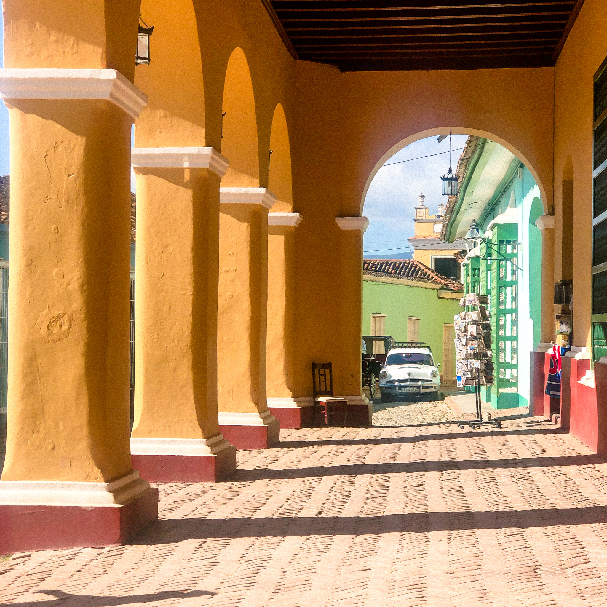

Nadine Levy is a photographer from London specialising in travel and landscape photography.
Nadine's passion for adventure and history has taken her all over the world, capture moments and sharing stories.

Trinidad is a colonial old town in central Cuba.
Full of history and cobble streets, it's definitaly a site to see.
Taken with a Canon 90D - Zoom Lens.